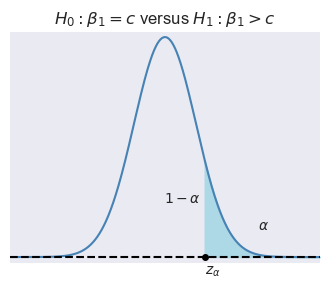
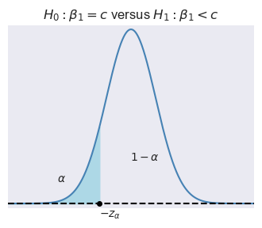
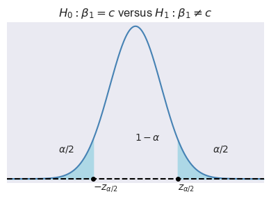
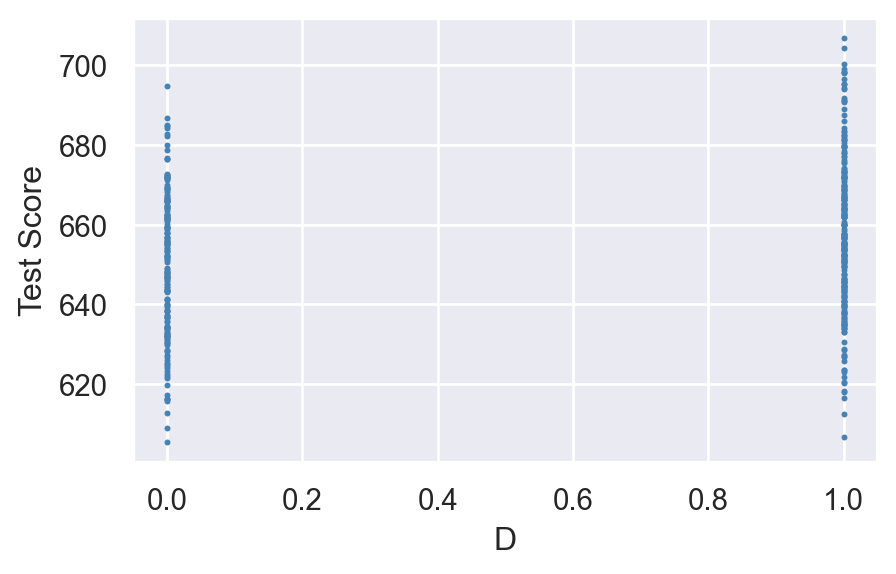
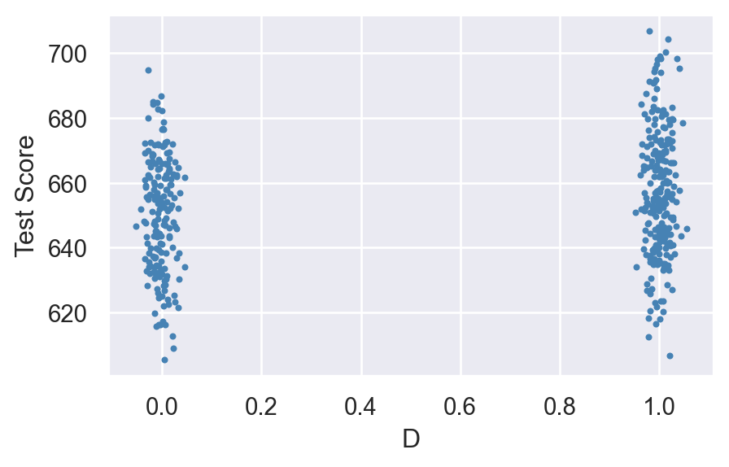
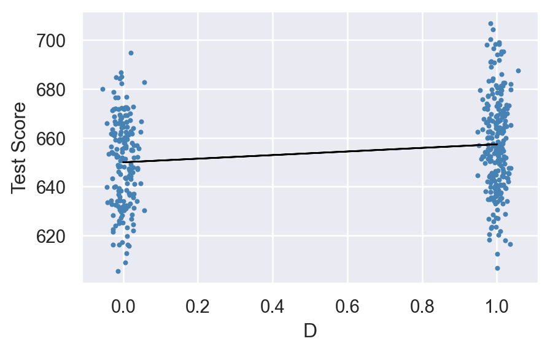

import numpy as np
import pandas as pd
import matplotlib.pyplot as plt
import seaborn as sns
import statsmodels.api as sm
import statsmodels.formula.api as smf
from statsmodels.iolib.summary2 import summary_col
import scipy.stats as stats14 Regression with a Single Regressor: Hypothesis Tests and Confidence Intervals
14.1 Testing hypotheses about one of the regression parameters
A hypothesis is a claim about the true value of a parameter. We are interested in formulating hypotheses about the slope parameter \(\beta_1\) in the simple linear regression model. The null hypothesis states our claim about \(\beta_1\) and is denoted by \(H_0\). For example, the null hypothesis: \(H_0: \beta_{1} = c\) states that \(\beta_1\) is equal to the hypothesized value \(c\). The alternative hypothesis states the scenario in which the null hypothesis does not hold. There are three types of alternative hypotheses:
- Two-sided alternative hypothesis: \(H_1: \beta_{1} \ne c\),
- Left-sided alternative hypothesis: \(H_1: \beta_{1} < c\), and
- Right-sided alternative hypothesis: \(H_1: \beta_{1} > c\).
We use the \(t\)-statistic to test \(H_0\): \[ \begin{align} t=\frac{\text{estimator-hypothesized value}}{\text{standard error of the estimator}}. \end{align} \] Thus, the \(t\)-statistic for testing \(H_0:\beta_1=c\) takes the following form: \[ \begin{align} t = \frac{\hat{\beta}_{1} - c}{\SE(\hat{\beta}_1)}, \end{align} \tag{14.1}\]
where \(\SE(\hat{\beta}_1)\) is the square root of the variance of \(\hat{\beta}_1\). Note that the test statistic \(t\) is formulated under the assumption that \(H_0\) holds.
To compute the \(t\)-statistic in Equation 14.1, we need to determine \(\SE(\hat{\beta}_1)\). In Chapter 13, we show that \[ \begin{align*} &\hat{\beta}_1 \stackrel{A}{\sim} N\left(\beta_1, \sigma^2_{\hat{\beta}_1}\right),\,\text{where}\quad\sigma^2_{\hat{\beta}_1} = \frac{1}{n}\frac{\var\left((X_i - \mu_X)u_i\right)}{\left(\sigma^2_X\right)^2},\\ &\hat{\beta}_0 \stackrel{A}{\sim} N\left(\beta_0, \sigma^2_{\hat{\beta}_0}\right),\, \text{where}\quad\sigma^2_{\hat{\beta}_0} = \frac{1}{n}\frac{\var\left(H_i u_i\right)}{\left(\E(H_i^2)\right)^2}\,\,\text{and}\,\, H_i = 1 - \frac{\mu_X}{\E(X_i^2)}X_i. \end{align*} \]
We can estimate the variance terms by replacing the unknown terms in \(\sigma^2_{\hat{\beta}_1}\) and \(\sigma^2_{\hat{\beta}_0}\) by their sample counterparts: \[ \begin{align} &\hat{\sigma}^2_{\hat{\beta}_1} = \frac{1}{n}\frac{\frac{1}{n-2}\sum_{i=1}^n(X_i - \bar{X})^2\hat{u}_i^2}{\left(\frac{1}{n}\sum_{i=1}^n(X_i - \bar{X})^2\right)^2},\\ &\hat{\sigma}^2_{\hat{\beta}_0} = \frac{1}{n}\frac{\frac{1}{n-2}\sum_{i=1}^n\hat{H}^2\hat{u}_i^2}{\left(\frac{1}{n}\sum_{i=1}^n\hat{H}_i^2\right)^2}\quad\text{and}\quad \hat{H}_i = 1 - \frac{\bar{X}}{\frac{1}{n}\sum_{i=1}^nX_i^2}X_i. \end{align} \]
Then, \(\SE(\hat{\beta}_{1})\) in Equation 14.1 can be computed by \(\SE(\hat{\beta}_{1})=\sqrt{\hat{\sigma}^2_{\hat{\beta}_1}}\). Also, when the sample size is large, the central limit theorem ensures that \[ \begin{align} \hat{\beta}_1 \stackrel{A}{\sim} N\left(\beta_1, \sigma^2_{\hat{\beta}_1}\right) \implies \frac{\hat{\beta}_1 - \beta_1}{\sigma_{\hat{\beta}_1}}\stackrel{A}{\sim} N(0,1). \end{align} \]
Thus, if \(H_0\) is true, then the sampling distribution of the \(t\)-statistic in Equation 14.1 can be approximated by \(N(0,1)\) in large samples, i.e., \[ t\stackrel{A}{\sim} N(0,1). \]
Let \(\alpha\) be the significance level, i.e., the probability of Type-I error. We can use the asymptotic distribution of \(t\), \(\alpha\) and the type of the alternative hypothesis to determine the critical values. In Figure 14.1, depending on the type of alternative hypothesis, we determine the critical values as \(z_{\alpha}\), \(-z_{\alpha}\), \(z_{\alpha/2}\), and \(-z_{\alpha/2}\). These values suggest the following rejection regions:
- \(\{z:z>z_{\alpha}\}\) when \(H_1:\beta_1>c\),
- \(\{z:z<-z_{\alpha}\}\) when \(H_1:\beta_1<c\), and
- \(\{z:|z|>z_{\alpha/2}\}\) when \(H_1:\beta_1\ne c\).
If the realized value of \(t\) falls within a rejection region, then we reject the null hypothesis at the \(\alpha\%\) significance level; otherwise, we fail to reject the null hypothesis.



Example 14.1 Assume that \(\alpha=5\%\) and \(H_1:\beta_1\ne c\). Then, the critical value on the left tail is the \(2.5\)th percentile of \(N(0,1)\), which is \(-z_{\alpha/2}=-1.96\), and the critical value on the right tail is the \(97.5\)th percentile of \(N(0,1)\), which is \(z_{\alpha/2}=1.96\). In Python, we can compute these critical values as follows:
left_critical = stats.norm.ppf(0.025, loc=0, scale=1)
right_critical = stats.norm.ppf(0.975, loc=0, scale=1)
print("Left critical value:", np.round(left_critical, 2))
print("Right critical value:", np.round(right_critical, 2))Left critical value: -1.96
Right critical value: 1.96Alternatively, we can compute the \(p\)-value to decide between \(H_0\) and \(H_1\). The \(p\)-value is the probability of obtaining a test statistic value that is more extreme than the actual one when \(H_0\) is correct. Let \(t_{\text{calc}}\) be the realized value of the \(t\)-statistic from Equation 14.1. Then, depending on the type of alternative hypothesis, we can determine the \(p\)-value as \[ \begin{align} \text{$p$-value}= \begin{cases} P_{H_0}\left(t > |t_{\text{calc}}|\right)=1-\Phi(|t_{\text{calc}}|)\,\,\text{for}\,\,H_1:\beta_1>c,\\ P_{H_0}\left(t <-|t_{\text{calc}}|\right)=\Phi(-|t_{\text{calc}}|)\,\,\text{for}\,\,H_1:\beta_1<c,\\ P_{H_0}\left(|t| > |t_{\text{calc}}|\right)=2\times\Phi(-|t_{\text{calc}}|)\,\,\text{for}\,H_1:\beta_1\ne c. \end{cases} \end{align} \]
We reject \(H_0\) at the \(\alpha\%\) significance level if the \(p\)-value is less than \(\alpha\); otherwise, we fail to reject \(H_0\).
Example 14.2 Assume that \(\alpha=0.05\) and the realized value of the \(t\)-statistic is \(t_{\text{calc}}=-2.5\). Then, the \(p\)-value for the two-sided alternative hypothesis is \[ \begin{align} \text{$p$-value} = 2\times\Phi(-|-2.5|) = 2\times\Phi(-2.5). \end{align} \]
We can compute the \(p\)-value in Python as follows:
# Compute p-value
t_calc = -2.5
p_value = 2 * stats.norm.cdf(-np.abs(t_calc), loc=0, scale=1)
print("p-value:", np.round(p_value, 4))p-value: 0.0124Since \(p\text{-value} < 0.05\), we reject \(H_0\) at the \(5\%\) significance level.
14.2 Application to the test score example
Recall that there are two options for running OLS regressions: (i) the smf.ols() function and (ii) the sm.OLS() function. In the first option, statsmodels allows users to fit statistical models using R-style formulas. We use the data set contained in the caschool.xlsx file to estimate the following model: \[
\begin{align}
\text{TestScore}_i = \beta_0 + \beta_1 \text{STR}_i + u_i,
\end{align}
\]
In the data set, the test scores are denoted by testscr and the student-teacher ratio by str.
# Import data
CAschool = pd.read_excel("data/caschool.xlsx")
# Column names
CAschool.columnsIndex(['Observation Number', 'dist_cod', 'county', 'district', 'gr_span',
'enrl_tot', 'teachers', 'calw_pct', 'meal_pct', 'computer', 'testscr',
'comp_stu', 'expn_stu', 'str', 'avginc', 'el_pct', 'read_scr',
'math_scr'],
dtype='object')Consider \(H_0: \beta_1 = 0\) against \(H_1: \beta_1 \neq 0\). We use the smf.ols() method to estimate the model.
# Specify the model
model1 = smf.ols(formula='testscr~str',data=CAschool)
# Use the fit method to obtain parameter estimates
result1 = model1.fit()
# Print the estimation results
print(result1.summary()) OLS Regression Results
==============================================================================
Dep. Variable: testscr R-squared: 0.051
Model: OLS Adj. R-squared: 0.049
Method: Least Squares F-statistic: 22.58
Date: Thu, 25 Dec 2025 Prob (F-statistic): 2.78e-06
Time: 15:24:51 Log-Likelihood: -1822.2
No. Observations: 420 AIC: 3648.
Df Residuals: 418 BIC: 3657.
Df Model: 1
Covariance Type: nonrobust
==============================================================================
coef std err t P>|t| [0.025 0.975]
------------------------------------------------------------------------------
Intercept 698.9330 9.467 73.825 0.000 680.323 717.543
str -2.2798 0.480 -4.751 0.000 -3.223 -1.337
==============================================================================
Omnibus: 5.390 Durbin-Watson: 0.129
Prob(Omnibus): 0.068 Jarque-Bera (JB): 3.589
Skew: -0.012 Prob(JB): 0.166
Kurtosis: 2.548 Cond. No. 207.
==============================================================================
Notes:
[1] Standard Errors assume that the covariance matrix of the errors is correctly specified.Using the estimation results, we can compute \(t\)-statistic as \[ \begin{align} t = \frac{\hat{\beta}_1-0}{SE(\hat{\beta}_1)} \approx \frac{-2.28}{0.48} \approx -4.75 \end{align} \]
Note that the result1.summary() function also returns the \(t\)-statistics. The column named t in the output includes the \(t\)-statistics. Also note that we can return \(t\)-statistics through the result1.tvalues attribute:
# t-statistics
result1.tvaluesIntercept 73.824514
str -4.751327
dtype: float64Assume that the significance level is \(\alpha = 0.05\). Then, the corresponding critical value can be determined in the following way.
# Critical value for 5 percent significance level
critical = stats.norm.ppf(0.975, loc=0, scale=1)
np.round(critical,2)1.96Since \(|t| = |-4.75| = 4.75 > 1.96\), we reject \(H_0\) at the \(5\%\) significance level. Thus, the estimated effect of class size on test scores is statistically significant at the \(5\%\) significance level.
The \(p\)-value for the two-sided alternative hypothesis is \[ \begin{align} \text{p-value} = \text{Pr}_{H_0}\left(|t| > |t_{\text{calc}}|\right) = 2 \times \Phi(-|t_{\text{calc}}|), \end{align} \]
where \(t_{\text{calc}}\) is the actual \(t\)-statistic computed, which is \(t\approx -4.75\). Then, we can compute the \(p\)-value in the following way:
# p-value for the two-sided alternative hypothesis
t = result1.tvalues["str"]
# t=result1.tvalues.iloc[1]
p_value = 2 * stats.norm.cdf(-np.abs(t), loc=0, scale=1)
p_value2.0208577446937873e-06Alternatively, we can return \(p\)-values through the result1.pvalues attribute:
# p-values
p_value = result1.pvalues
p_valueIntercept 6.569925e-242
str 2.783307e-06
dtype: float64Note that this value is slightly different from the one that we computed above by p_value = 2 * stats.norm.cdf(-np.abs(t), loc=0, scale=1). By default, the model1.fit() function uses the \(t\) distribution for the computation. Thus, we need to use the t distribution to get the same result:
t = result1.tvalues["str"]
# t=result1.tvalues.iloc[1]
p_value = 2 * stats.t.cdf(-np.abs(t), df=418)
p_value2.783306521200329e-06Again, since \(p\text{-value} < 0.05\), we reject \(H_0\) at the \(5\%\) significance level.
14.3 Confidence intervals for a regression parameter
Recall that the \(95\%\) two-sided confidence interval can be equivalently defined in the following ways:
- It is the set of points that cannot be rejected in a two-sided hypothesis testing problem with the \(5\%\) significance level.
- It is a set-valued function of the data (an interval that is a function of the data) that contains the true parameter value \(95\%\) of the time in repeated samples.
Then, the \(95\%\) two-sided confidence interval for \(\beta_1\) refers to the set of values for \(\beta_1\) such that \(P\left(\left\{\beta_1:\left|\frac{\hat{\beta}_1-\beta_1}{SE(\hat{\beta}_1)}\right|\le 1.96\right\}\right) = 0.95\). We can express the set \(\left\{\beta_1:\left|\frac{\hat{\beta}_1-\beta_1}{SE(\hat{\beta}_1)}\right|\le 1.96\right\}\) in a more convenient way: \[ \begin{align*} &\left\{\beta_1:\left|\frac{\hat{\beta}_1-\beta_1}{\SE(\hat{\beta}_1)}\right|\le 1.96\right\}=\left\{\beta_1:-1.96\le \frac{\hat{\beta}_1-\beta_1}{\SE(\hat{\beta}_1)}\le 1.96\right\}\\ &=\left\{\beta_1:-\hat{\beta}_1-1.96\, \SE(\hat{\beta}_1)\le -\beta_1\le -\hat{\beta}_1+1.96\, \SE(\hat{\beta}_1)\right\}\\ &=\left\{\beta_1:\hat{\beta}_1 + 1.96 \, \SE(\hat{\beta}_1)\ge \beta_1\ge \hat{\beta}_1 -1.96\, \SE(\hat{\beta}_1)\right\}\\ &=\left\{\beta_1:\hat{\beta}_1 - 1.96 \, \SE(\hat{\beta}_1)\le \beta_1\le \hat{\beta}_1 +1.96\, \SE(\hat{\beta}_1)\right\}. \end{align*} \]
In our test score example, the \(95\%\) confidence interval is computed in the following way:
# Confidence interval for beta_1
lower_bound = result1.params["str"] - critical*result1.bse["str"]
upper_bound = result1.params["str"] + critical*result1.bse["str"]
np.round([lower_bound, upper_bound], 6)array([-3.220249, -1.339367])Alternatively, we can resort to the result1.conf_int() method to return the confidence intervals for all parameters.
# Confidence intervals for all parameters
result1.conf_int(alpha=0.05)| 0 | 1 | |
|---|---|---|
| Intercept | 680.323126 | 717.542779 |
| str | -3.222980 | -1.336637 |
Again note that these values are slightly different from the ones that we computed above by lower_bound and upper_bound. By default, the model1.fit() function uses the t distribution for the computation instead of the normal distribution.
Note that the \(95\%\) two-sided confidence interval does not include the hypothesized value in \(H_0:\beta_1=0\), and therefore, we reject \(H_0\) at the \(5\%\) significance level.
14.4 Regression when \(X\) is a binary variable
In this section, we consider the following regression model: \[ \begin{align} Y_i &= \beta_0 + \beta_1 D_i + u_i, \quad i = 1,2,\dots,n, \end{align} \]
where \(D_i\) is a dummy variable defined as \[ \begin{align*} D_i &= \left\{\begin{array}{ll} 1, &\text{STR}_i < 20,\\ 0, &\text{STR}_i \geq 20. \end{array}\right. \end{align*} \]
Under the least squares assumptions, if the student-teacher ratio is high, i.e., \(D_i = 0\), then \(\E(Y_i|D_i = 0) = \beta_0\). However, if the student-teacher ratio is low, i.e., \(D_i = 1\), then \(\E(Y_i|D_i = 1) = \beta_0 + \beta_1\). Hence, \[ \begin{align*} \E(Y_i|D_i = 1) - \E(Y_i|D_i = 0) &= \beta_0 + \beta_1 - \beta_0 = \beta_1. \end{align*} \]
That is, \(\beta_1\) gives the difference between the mean test score in districts with low student-teacher ratios and the mean test score in districts with high student-teacher ratios.
The dummy variable can be created by using a logical operator. The command mydata$str < 20 will return \(1\) if \(STR < 20\), otherwise \(0\).
# Create the dummy variable D
CAschool["D"] = CAschool["str"] < 20
CAschool[["testscr", "str", "D"]].head()| testscr | str | D | |
|---|---|---|---|
| 0 | 690.799988 | 17.889910 | True |
| 1 | 661.200012 | 21.524664 | False |
| 2 | 643.599976 | 18.697226 | True |
| 3 | 647.700012 | 17.357143 | True |
| 4 | 640.849976 | 18.671329 | True |
Figure 14.2 shows the scatter plot of TestScore and D. Since D takes only two values, namely \(0\) and \(1\), we observe that the data points are clustered at x=0 and x=1.
# Scatterplot without jitter
sns.set(style='darkgrid')
fig, ax = plt.subplots(figsize=(5, 3))
ax.scatter(CAschool['D'], CAschool['testscr'],
s=1.5, c='steelblue', marker='o') # s is for size, c for color, and marker for point shape
ax.set_xlabel('D')
ax.set_ylabel('Test Score')
plt.show()
In Figure 14.3, we create a jittered version of D by adding some random noise: jittered_D = CAschool['D'] + np.random.normal(0, 0.02, size=len(CAschool['D'])), and construct a scatter plot between TestScore and jittered_D.
# Scatterplot with jitter
sns.set(style='darkgrid')
fig, ax = plt.subplots(figsize=(5, 3))
# Add jitter to the dummy variable 'D'
jittered_D = CAschool['D'] + np.random.normal(0, 0.02, size=len(CAschool['D'])) # Adjust the jitter scale as needed
# Scatter plot with jitter
ax.scatter(jittered_D, CAschool['testscr'], s=4, c='steelblue', marker='o')
ax.set_xlabel('D')
ax.set_ylabel('Test Score')
plt.show()
As in the case of a continuous regressor, we can use the smf.ols() function to estimate a dummy variable regression model.
# Specify the model
model2 = smf.ols(formula='testscr ~ D', data=CAschool)
# Use the fit method to obtain parameter estimates
result2 = model2.fit()
# Print the estimation results
print(result2.summary()) OLS Regression Results
==============================================================================
Dep. Variable: testscr R-squared: 0.037
Model: OLS Adj. R-squared: 0.035
Method: Least Squares F-statistic: 15.99
Date: Thu, 25 Dec 2025 Prob (F-statistic): 7.52e-05
Time: 15:24:51 Log-Likelihood: -1825.4
No. Observations: 420 AIC: 3655.
Df Residuals: 418 BIC: 3663.
Df Model: 1
Covariance Type: nonrobust
==============================================================================
coef std err t P>|t| [0.025 0.975]
------------------------------------------------------------------------------
Intercept 649.9788 1.388 468.380 0.000 647.251 652.707
D[T.True] 7.3724 1.843 3.999 0.000 3.749 10.996
==============================================================================
Omnibus: 3.061 Durbin-Watson: 0.110
Prob(Omnibus): 0.216 Jarque-Bera (JB): 2.448
Skew: 0.052 Prob(JB): 0.294
Kurtosis: 2.641 Cond. No. 2.81
==============================================================================
Notes:
[1] Standard Errors assume that the covariance matrix of the errors is correctly specified.The estimated regression function is \[ \begin{align} \widehat{\text{TestScore}}_i = 649.98 + 7.38 D_i. \end{align} \]
The estimate of \(\beta_1\) is \(7.38\), which indicates that students in the districts with STR < 20 have on average \(7.38\) more points than students in other districts.
Figure 14.4 shows the scatter plot along with the estimated regression function. Since \(\beta_1=7.38\), the estimated regression line is upward sloping, which indicates that the test scores are higher in districts with low student-teacher ratios.
# Set the style for seaborn
sns.set_style('darkgrid')
# Create the figure and axis objects
fig, ax = plt.subplots(figsize=(5, 3))
# Add jitter to the dummy variable 'D'
jittered_D = CAschool['D'] + np.random.normal(0, 0.02, size=len(CAschool['D'])) # Adjust the jitter scale as needed
# Scatter plot with jitter
ax.scatter(jittered_D, CAschool['testscr'], s=4, c='steelblue', marker='o')
# Plot the regression line (without jitter)
ax.plot(CAschool['D'], result2.fittedvalues, color='black', linewidth=1)
# Set labels for axes
ax.set_xlabel('D')
ax.set_ylabel('Test Score')
# Display the plot
plt.show()
14.5 Heteroskedasticity versus Homoskedasticity
In the least squares assumptions introduced in Chapter 13, we only assume the zero-conditional mean assumption about the error terms. Other than this assumption, we do not impose any structure on the error term \(u_i\). In this section, we introduce two concepts about the conditional variance of the error term \(u_i\) given \(X_i\): homoskedasticity and heteroskedasticity. We say that the error term \(u_i\) is homoskedastic if the variance of \(u_i\) given \(X_i\) is constant for all \(i = 1,2,\dots,n\). In particular, this means that the variance does not depend on \(X_i\). On the other hand, if the variance does depend on \(X_i\), we say that the error term \(u_i\) is heteroskedastic.
Homoskedasticity and heteroskedasticity do not affect the unbiasedness and consistency of the OLS estimators of \(\beta_0\) and \(\beta_1\). However, they do affect the variance formulas of the OLS estimators given in Theorem 13.1 of Chapter 13. Under homoskedasticity, let \(\var(u_i|X_i)=\sigma^2_u\), where \(\sigma^2_u\) is an unknown scalar parameter. Then, the variance formulas of \(\hat{\beta}_1\) and \(\hat{\beta}_0\) simplify to \[ \begin{align*} &\sigma^2_{\widehat{\beta}_1} = \frac{1}{n}\frac{\var\left((X_i - \mu_X)u_i\right)}{\left(\var(X_i)\right)^2} = \frac{\sigma^2_u}{n\var(X_i)},\\ &\sigma^2_{\hat{\beta}_0} = \frac{1}{n}\frac{\var\left(H_i u_i\right)}{\left(\E(H_i^2)\right)^2} = \frac{\E(X^2_i)\sigma^2_u}{n\sigma^2_X}. \end{align*} \]
These variances are called the homoskedasticity-only variances. They can be estimated as \[ \begin{align*} &\hat{\sigma}^2_{\hat{\beta}_1} = \frac{\frac{1}{n-2}\sum_{i=1}^n \hat{u}_i^2}{\sum_{i=1}^n(X_i - \bar{X})^2},\\ &\hat{\sigma}^2_{\hat{\beta}_0}=\frac{\left(\frac{1}{n}\sum_{i=1}^nX^2_i\right)\left(\frac{1}{n-2}\sum_{i=1}^n \hat{u}_i^2\right)}{\frac{1}{n}\sum_{i=1}^n(X_i - \bar{X})^2}. \end{align*} \]
The smf.ols() function uses these formulas to compute the standard errors, i.e., it only reports the homoskedasticity-only standard errors. To get heteroskedasticity-robust standard errors, we need to supply cov_type="HC1" in the fit method, as shown below.
# Specify the model
model3 = smf.ols(formula='testscr~str', data=CAschool)
# Use the fit method to obtain parameter estimates
result3 = model3.fit(cov_type="HC1")
# Print the estimation results
print(result3.summary()) OLS Regression Results
==============================================================================
Dep. Variable: testscr R-squared: 0.051
Model: OLS Adj. R-squared: 0.049
Method: Least Squares F-statistic: 19.26
Date: Thu, 25 Dec 2025 Prob (F-statistic): 1.45e-05
Time: 15:24:52 Log-Likelihood: -1822.2
No. Observations: 420 AIC: 3648.
Df Residuals: 418 BIC: 3657.
Df Model: 1
Covariance Type: HC1
==============================================================================
coef std err z P>|z| [0.025 0.975]
------------------------------------------------------------------------------
Intercept 698.9330 10.364 67.436 0.000 678.619 719.247
str -2.2798 0.519 -4.389 0.000 -3.298 -1.262
==============================================================================
Omnibus: 5.390 Durbin-Watson: 0.129
Prob(Omnibus): 0.068 Jarque-Bera (JB): 3.589
Skew: -0.012 Prob(JB): 0.166
Kurtosis: 2.548 Cond. No. 207.
==============================================================================
Notes:
[1] Standard Errors are heteroscedasticity robust (HC1)In the following, we use the summary_col function to present results contained in result1 and result2 side by side. The estimation results are presented in Table 14.1. The estimation results in this table indicate that the heteroskedasticity-robust standard errors are relatively large.
# Print results in table form
models = ['Homoskedastic Model', 'Heteroskedastic Model']
results_table=summary_col(results=[result1,result3],
float_format='%0.3f',
stars=True,
model_names=models)
results_table| Homoskedastic Model | Heteroskedastic Model | |
| Intercept | 698.933*** | 698.933*** |
| (9.467) | (10.364) | |
| str | -2.280*** | -2.280*** |
| (0.480) | (0.519) | |
| R-squared | 0.051 | 0.051 |
| R-squared Adj. | 0.049 | 0.049 |
Standard errors in parentheses.
* p<.1, ** p<.05, ***p<.01
In practice, which standard errors should we use? Stock and Watson (2020) write that “At a general level, economic theory rarely gives any reason to believe that the errors are homoskedastic. It therefore is prudent to assume that the errors might be heteroskedastic unless you have compelling reasons to believe otherwise.” Therefore, we recommend using heteroskedasticity-robust standard errors in practice.
14.6 The theoretical foundations of ordinary least squares
In this section, we consider the OLS estimator of \(\beta_1\) under the following assumptions.
Under these extended assumptions, the following theorem justifies the use of the OLS method.
Theorem 14.1 (The Gauss-Markov Theorem for \(\hat{\beta}_1\)) Under Gauss–Markov Assumption, the OLS estimator of \(\beta_1\) is the best (most efficient) linear conditionally unbiased estimator (BLUE).
The proof of this theorem is given in Stock and Watson (2020). The Gauss-Markov theorem states that the OLS estimator \(\hat{\beta}_1\) has the smallest conditional variance among all conditionally unbiased estimators that are linear functions of \(Y_1,\dots,Y_n\). There are two limitations to this theorem. First, it requires the strong assumption that error terms are homoskedastic, which mostly does not hold in empirical applications. Second, there exist conditionally biased and non-linear estimators that are more efficient than the OLS estimator. We discuss such estimators in Chapter 24.
In the next chapter, we introduce the multiple linear regression model. In Chapter 29, we extend the Gauss-Markov theorem to the multiple linear regression model.